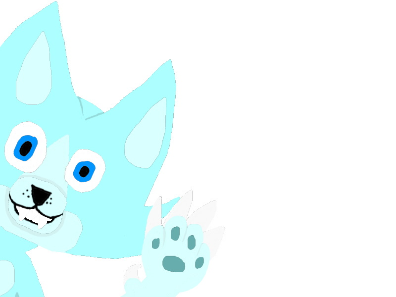

Litaskali í bakgrunni
Meðfylgjandi verkefninu er .zip skrá með 2 vefsíðum sem þú átt að tengja saman. Normalize.css stílsíðan fylgir með en aðal stílsíðuna vantar. Þú átt að búa hana til og tengja við vefsíðurnar. Skipulag síðunnar á að vera svipað því sem sýnt er hér á vefsíðunni en lita- og leturval er frjálst
Þegar skjár er minni en 60em (960px) þá á textinn í vefsíðunni að dragast saman og vera sýnilegur, prófaðu að nota stílbragðið "max-with".
Þetta vefdæmi er að hluta til byggt á verkefnadæmi á vef Shayhowe, Gradient backrounds en þar sem hann hefur ekki uppfært vefinn notar hvorki flexbox eða grid lausnir er ekki hægt að fara eftir hans uppsetningu
